Now showing
A website redesign for Stratford's local cinema
Overview
Stratford’s local cinema had a website that was outdated, cluttered and hard to use, especially if you were an older visitor trying to find a showtime.
I redesigned the website based on surveys and testing with people in Stratford, made a new logo, and planned how the new brand would reach both moviegoers and the local community. The new site is cleaner, easier to use, and works as the cinema’s main way of promoting itself.
A quick note: I made this project in 2025. Stratford Cinemas has redesigned their website since then, so the live site won’t match the original shown here, but a lot of this case study may still apply.
View the Stratford Cinemas website- Designer
- Maleeha Abrar
- Role
- Branding, logo design, web prototype, marketing strategy
- Tools
- Adobe Illustrator (logo), Procreate (sketches), Figma (website prototype)
- Year
- 2025
The original
Original logo
The old logo felt generic. It looked more like a basic Facebook page logo than a cinema, and nothing about it said film or Stratford.
Original website
The old site was cluttered and inconsistent, and it took way too many clicks to find movie times or buy tickets.
These screenshots were taken in 2025, before Stratford Cinemas redesigned their website.
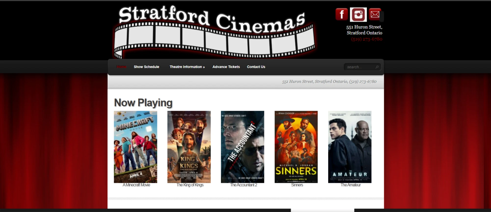
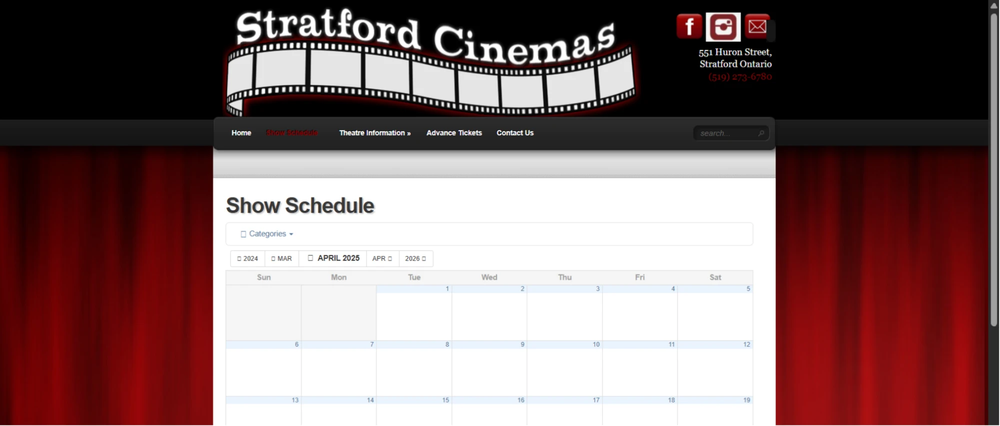
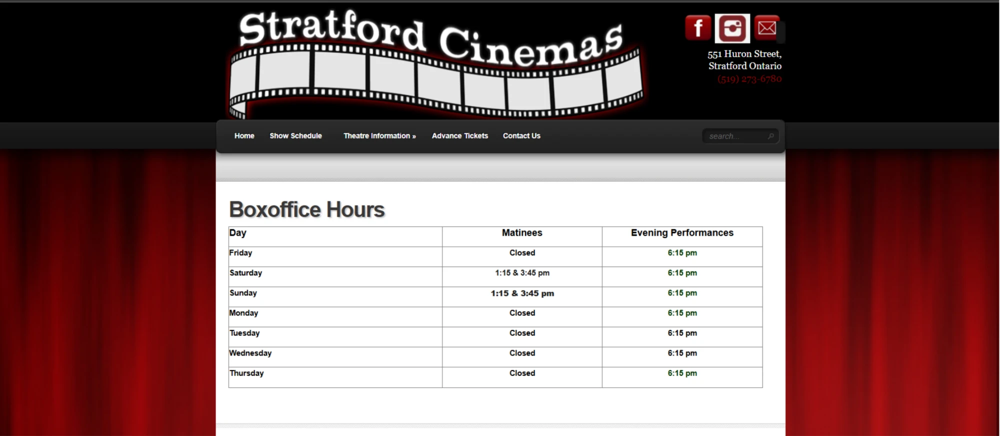
Problem statement
How might we make it easy for moviegoers and Stratford locals to find showtimes, buy tickets and feel connected to their local cinema?
Challenges & solutions
- ChallengeThe design was outdated, hard to get around and had no accessibility features.SolutionI ran surveys and usability tests with Stratford residents and students to find out what frustrated them most.
- ChallengeToo much clutter, and a logo that had nothing to do with movies or the town.SolutionA new logo and look, and value hierarchy charts to make sure each design choice came back to what users needed.
- ChallengeTwo different audiences: moviegoers wanted to book fast, and locals needed accessibility and more ways to get involved.SolutionAdjustable fonts, contrast settings and clearly labelled buttons, plus an event calendar and social media links.
Marketing strategy
Most people check the website before deciding to see a movie, so I treated the site as the cinema’s main marketing tool and planned around the two audiences I found in my research.
Moviegoers
They want to find showtimes and buy tickets fast, on a site that looks modern and organized.
Reached through quick booking, clear “now playing” listings & social media
The Stratford community
They care about local events, a site that’s easy to use (especially for older visitors) and accessibility.
Reached through community events, an event calendar & an accessible site
Positioning
Movies made better, right in Stratford.
A classic local cinema with a fresh update, modern enough for students and welcoming for everyone in town.
Process
Moodboard
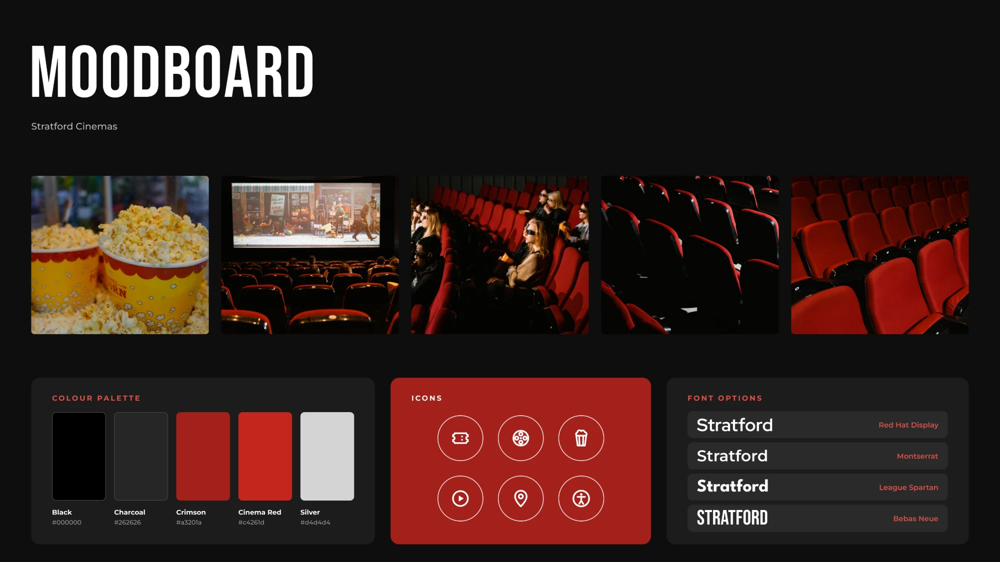
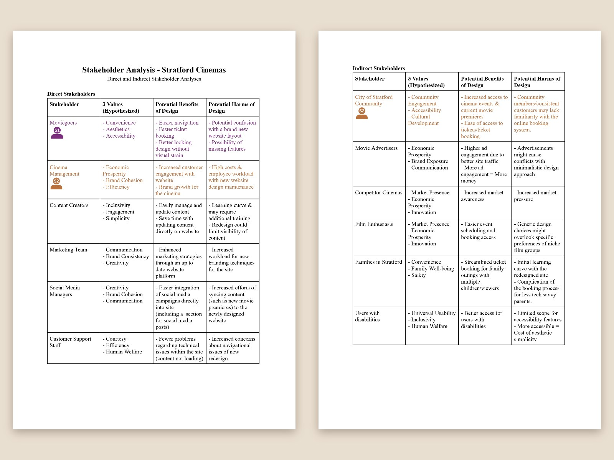
01
Stakeholder discovery
I figured out the two main groups using the site: moviegoers who wanted speed and a modern look, and locals who wanted local content, ease of use and accessibility.
View stakeholder analysis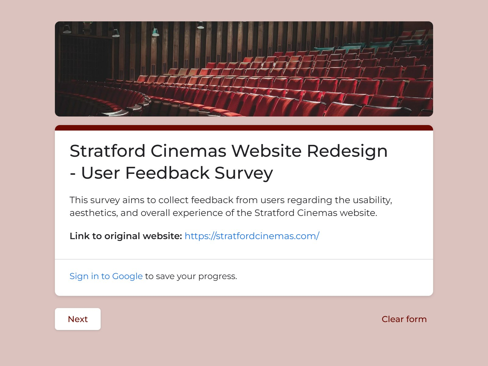
02
Research & testing
I made an online survey and ran usability tests with classmates, first-time users and a few Stratford residents, including two who had been to the cinema. I asked about navigation, visuals and accessibility.
View the survey03
Competitive audit
Looking at other cinema websites showed me what Stratford’s was missing, like live ticket updates and personalized content.
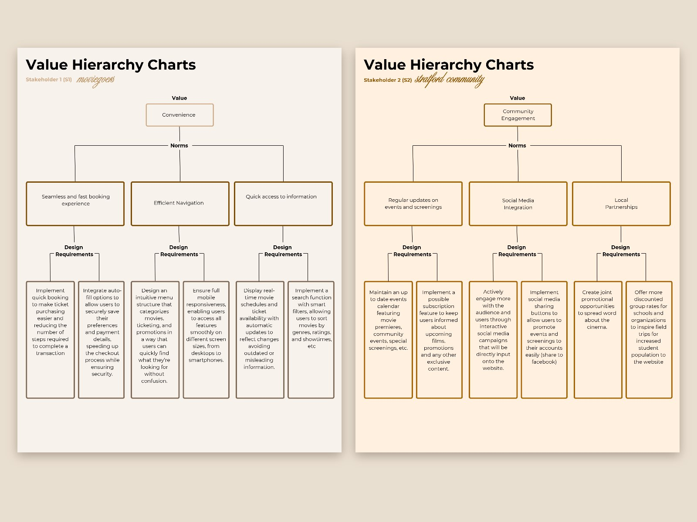
04
Value hierarchy
For each audience, I broke their core values down into design rules, then into clear requirements for the final site.
View value hierarchy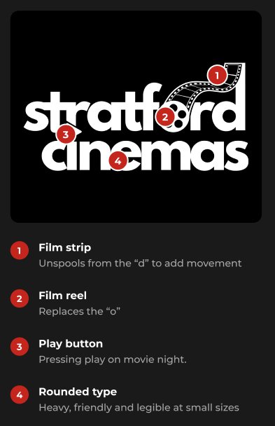
05
Logo & brand
I added a film reel, soft curves and a black, white and red palette so it feels classic but still modern.
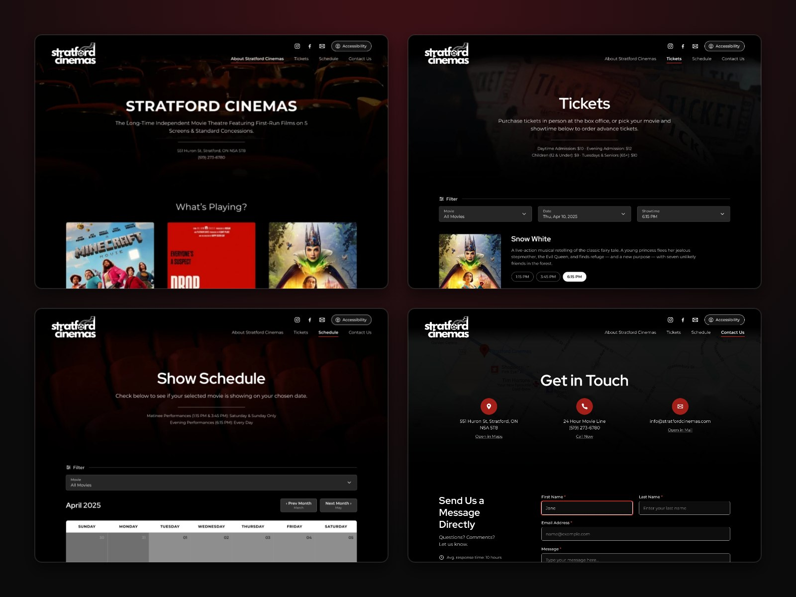
06
Web prototype
I built the new site in Figma with simpler navigation, cleaner layouts and accessibility that follows WCAG guidelines.
From the survey
- Admit one52users surveyed and tested
- Admit one100%said the original site had no accessibility features
- Admit one48people in usability testing said the original site had navigation issues
What I found: moviegoers
Convenience, easy navigation and clear content mattered most. Everyone surveyed said the original site had no accessibility features, and 48 people in usability testing said it had navigation issues. Other cinema sites also had personalized recommendations and social media integration, which the original site was missing.
What I found: the Stratford community
Feedback from past visitors pointed to better community engagement, clearer branding and a more accessible experience, especially for older users.
Moviegoers value
Convenience, looks, accessibility
Fast booking, clean visuals, adjustable settings
The community values
Engagement, accessibility, efficiency
Event calendar, accessibility menu, WCAG guidelines
Design requirements
- Adjustable font sizes and settings
- A visually cohesive theme
- Up-to-date movie schedules
- Consistent branding
- Social media sharing buttons
- High-quality visuals
- Clear categories for movies, tickets and promotions
- Alt text for images and buttons
- Accessibility options
- Responsive design for desktop, tablet and phone
The redesign
Redesigned logo
The new logo has a film reel, soft curves and a simple palette, so it finally looks like a cinema.
Drag to compare ↔
Redesigned website
The new site is easier to get around, has cleaner layouts, follows WCAG accessibility guidelines and works on phones too.
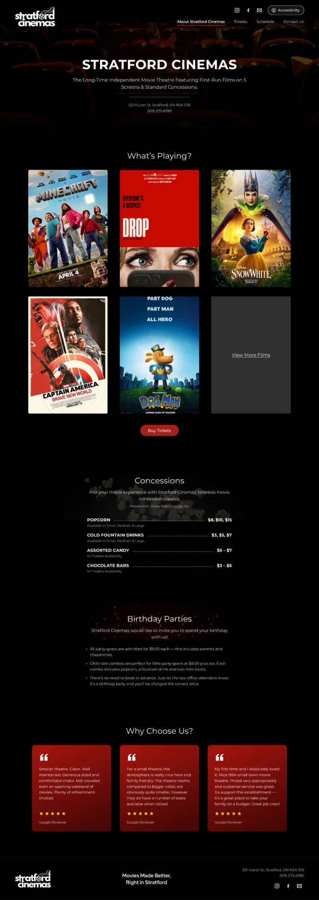
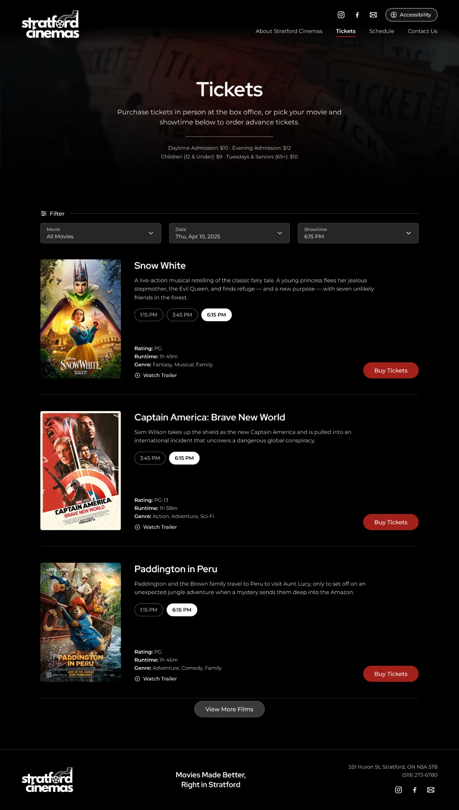
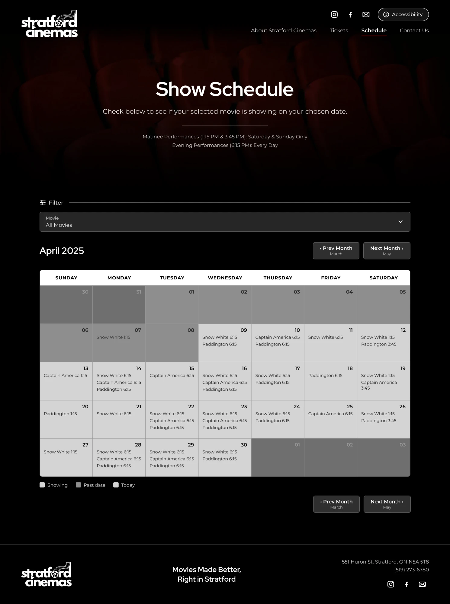
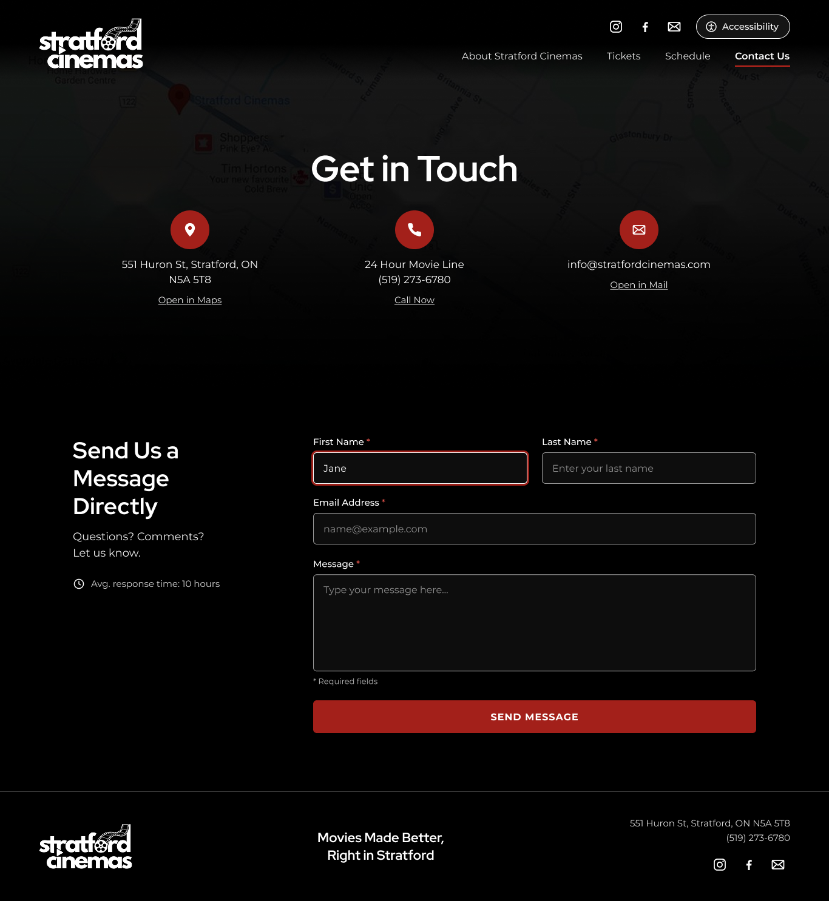
Footer
Brand in use
Social media posts
Their weekly posts used a different colour, font and layout every time, so they didn’t look like they came from the same cinema. I redesigned them with the new logo, a black and red palette and one layout that works for every kind of post: weekly showtimes, leaving soon and last chance.
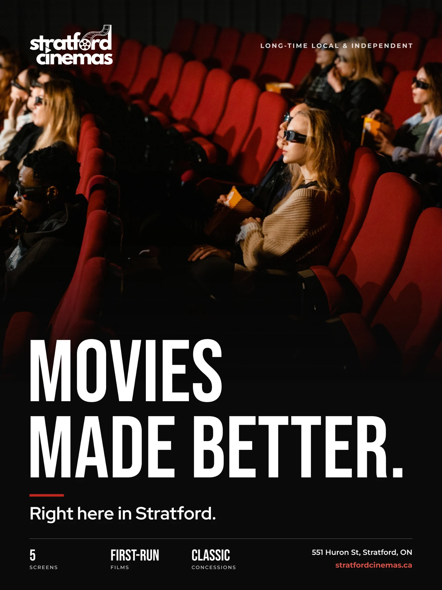
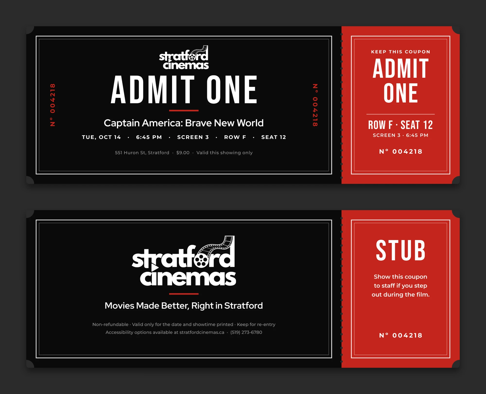
Accessibility
An Accessibility button sits at the top of every page. It opens a panel where you can change how the site looks and works for you.
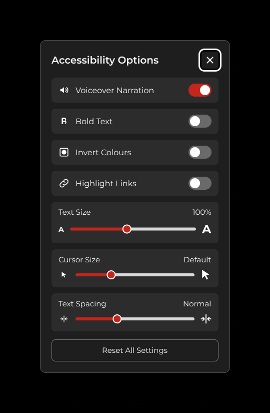
- Voiceover narration Reads the page out loud.
- Bold text Makes all the text thicker and easier to read.
- Invert colours Flips the colours for people who find a dark site hard to read.
- Highlight links Makes every link stand out.
- Text size, cursor size and text spacing Sliders to make each one bigger or smaller.
- Reset all settings One button to go back to the default.
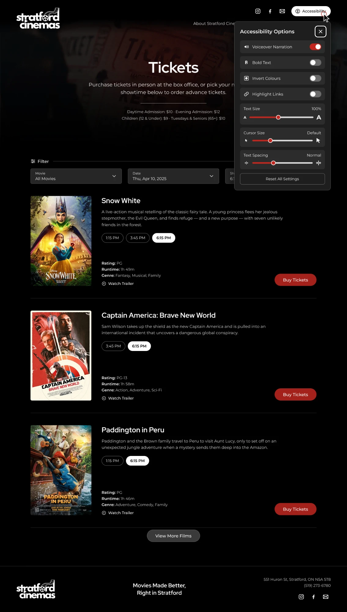
Reflection
This project was my first time redesigning a real business’s website from start to finish, and it taught me how much research shapes good design. Mapping out the stakeholders and building value hierarchy charts made me think about who the site is for before I opened Figma, and every design decision ended up tracing back to something a moviegoer or a Stratford local needed.
The survey results made the problems clear. Everyone said the original site had no accessibility features, and 48 people in usability testing said it had navigation issues. That pushed me to build the accessibility panel with voiceover, bold text, text size and spacing settings, and to keep the navigation as simple as possible.
If I did it again, I’d add the features my competitive audit showed were missing, like personalized movie recommendations and live ticket updates, and I’d test the new design with more older visitors. I’m proudest of how the new brand comes together across the logo, website, social posts, poster and tickets, so it finally feels like one cinema.